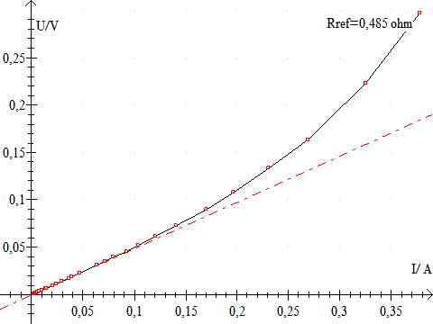
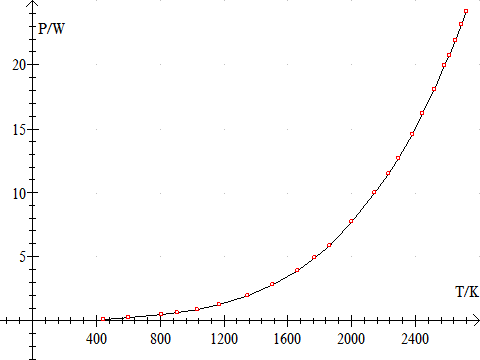
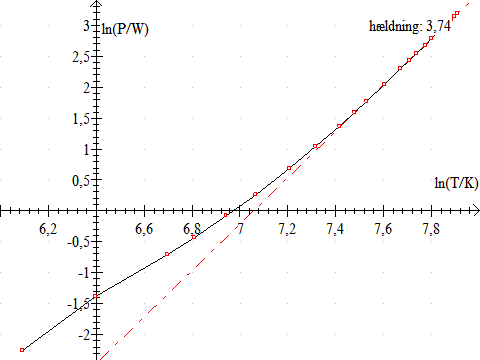
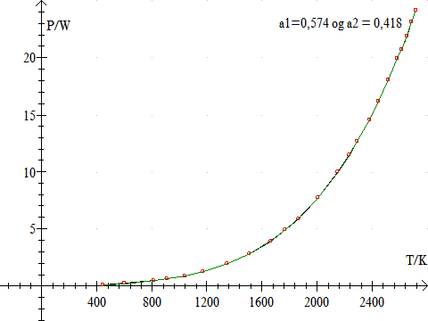
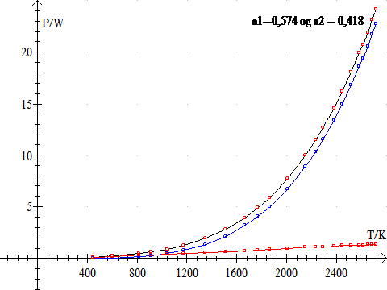

Den udstrålede effekt fra et absolut sort legeme med overfladeareal A og den absolutte temperatur T er givet ved:
Pstråling = A·s·T 4,
hvor Stefan-Boltzmanns konstant, s = 5,67·10-8W·m-2·K-4
Formålet med forsøget er at eftervise Stefan-Boltzmanns lov.
Der benyttes en Stefan-Boltzmanns lampe, et
voltmeter, et amperemeter , en skydemodstand
og et termometer. Lampen må højst tilsluttes en spænding på
13 volt. Datalyse kan benyttes sammen med to multimetre
med interface. Vælg dataopsamling fra to apparater i Datalyse og vælg retur
for hver måling. Når strømstyrker og spædninger er målt og
resistansen af lampen er beregnet, udregnes temperaturen af glødetråden.
Funktionen er T
= 287,15·(R/R300)0,88454·e5,0E-6·(R/R300)
er en god tilnærmelse. Dvs. et produkt af en potensfunktion og en eksponentiel
udvikling. Bemærk, at R/R300 ændres pga ændring og resistivitet og længde.
Bestemmelse af resistansten, Rref ved stuetemperatur:
Udfør en række målinger af U og I ved så små strømstyrker, at man kan se bort fra temperaturstigningen i pæren. Det vil være tilfældet, hvis spændingerne vælges i området 1 mV til 10 mV. Udregn herefter resistansen ved stuetemperatur vha. Ohms lov, som vist på grafen. Mål samtidigt temperaturen i lokalet, tstue.

Rref og tstue benyttes til at beregne resistansen R300 ved temperaturen T = 300 K. R300 beregnes vha. formlen for resistansen som funktion af temperaturen:
R = R0(1 +a·DT),
hvor R0 er resistansen ved 0° C og a er temperaturkoefficienten og DT er temperaturstigningen. Wolframs temperaturkoefficient er 0,0048 1/K ved 273 K.
Udregningen foregår i to omgange:
Lav en serie målinger af spænding U og strømstyrke I. Lav ca. Ti målinger i området 10-100 mV, og ti målinger i området 100-1000 mV og ti målinger i området 1-13 V. For at få kunne indstille spændingen præcis for små spændinger kan man indsætte en 100 ohms modstand i serie med lampen eller man kan bruge en spændingsdeler. Alle værdier skrives i den samme tabel.
Hvis man har benyttet Datalyse til dataopsamling kan udregningerne foretages i tabellen i Datalyse ellers kan de laves i Excel. Her er et klip fra en tabel i Datalyse:
|
t/s |
I/ A |
U/V |
P/W |
R/ohm |
R/R300 |
T/K |
Pst/W |
Ptab/W |
|
143,593 |
0,359 |
0,294 |
0,105 |
0,819 |
1,668 |
442,6 |
0,016 |
0,089 |
|
|
|
|
|
|
|
|
|
|
Beregn varmeeffekten P
R beregnes vha. Ohms lov.
R/R300 beregnes, idet R300 er i forsøg 1.
Temperaturen T beregnes vha. den tilnærmede funktion, som er beskrevet ovenfor.
Herefter afbildes effekten P, som funktion af temperaturen T.
|
 |
 |
| Grafen viser, at effekten P stiger med temperaturen, men hvordan? | Dobbeltlogaritmisk afbildning. Ved høje temperaturer, ses det, at effekten stiger proportionalt med T 3,74, men … |
Ved lave temperaturer sker varmetransporten hovedsageligt ved varmeledning og strømning. Varmeeffekten bør derfor være proportional med temperaturforskellen mellem glødetråden og omgivelserne. Ved høje temperaturer sker varmetransporten hovedsageligt ved stråling. Dvs.
P = Pledning + Pstråling = a1·(T - Tstue) + a2·T 4
Hvor stor en del af effekten P, der skyldes varmeledning og hvor stor en del, der skyldes varmestråling, kan bestemmes ved fitning i Datalyse. Benyt et funktionsudtryk af formen
f(t) = a1*1E-3*(T - Tstue) + a2*1E-12*T 4.
Eksempel på fit i Datalyse

Denne graf viser, at P = 0,574·10-3W/K·(T-Tstue) + 0,418·10-12W/K·T 4.
Vi kan nu afbilde både P, Pledning og Pstråling som funktion af T:

P: sort graf. Pstråling: blå graf. Pledning: rød graf. Ved lave temperaturer dominerer Pledning og ved høje temperaturer dominerer Pstråling.
Benyt Stefan-Boltzmanns lov til at udregne arealet af glødetråden.